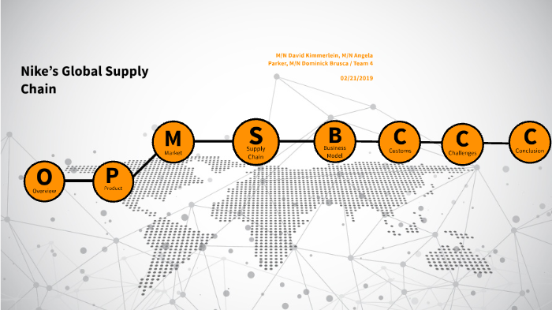
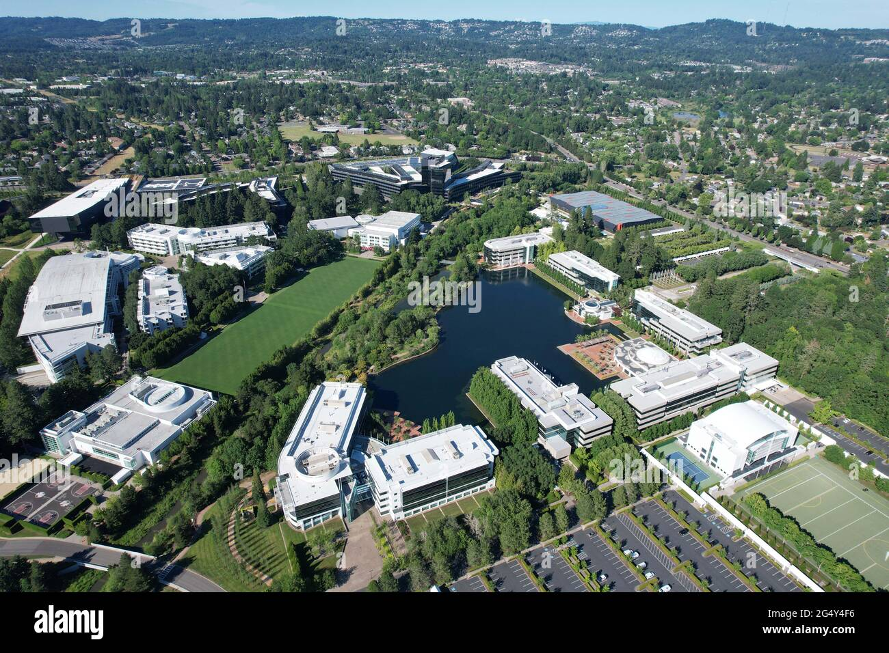
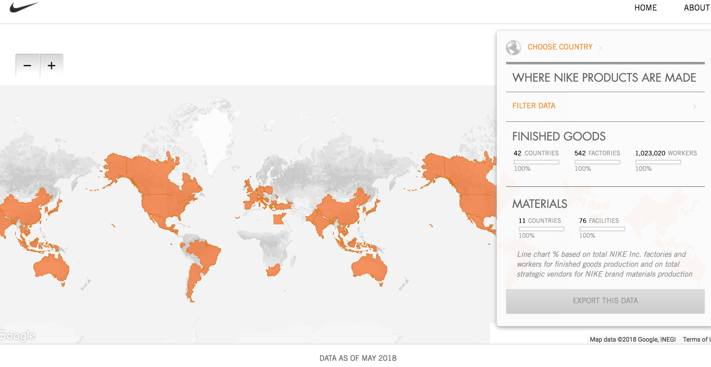

Nike: Global Journey to Canada
Investigating a Nike Dri-FIT T-Shirt — from raw materials, manufacturing, logistics to Canadian retail shelves.

Project Scope
This project traces how Nike operates worldwide, focusing on the Dri-FIT polyester t-shirt. We examine each economic sector, labor conditions, trade agreements, and environmental impact with a final focus on the Canadian market.
Quick Facts
- Headquarters: Beaverton, Oregon, USA
- Product selected: Polyester-based athletic T-shirt (Dri-FIT)
- Canada: Over 70 retail locations (based on Nike's 2025 store directory) and strong e-commerce presence
- Manufacturing countries: Vietnam, China, Indonesia, Cambodia
Initial Research (Step 1)
- 1. Where does Nike operate? Nike operates globally with design and development in the USA (headquarters in Beaverton, Oregon), manufacturing across Asia (Vietnam, China, Indonesia, Cambodia, Sri Lanka, Bangladesh), distribution centers worldwide, and retail stores in over 170 countries including 70+ locations across Canada in Ontario, British Columbia, Quebec, and other provinces.
- 2. Why outsource? Nike outsources manufacturing to achieve cost efficiency, access specialized labor expertise, and leverage mature textile infrastructure in Asian countries. According to Nike's annual filings, Vietnam produces 50% of footwear and 28% of apparel, Indonesia produces 27% of footwear, and Cambodia produces 15% of apparel, with China accounting for 18% of footwear and 16% of apparel [citation:2][citation:8]. This geographic diversification also minimizes supply chain risk.
- 3. Impact on Canada? Outsourcing reduces local manufacturing employment in Canada's apparel sector but allows Nike to offer competitively priced athletic wear to Canadian consumers, increases product variety, and strengthens Canada's retail and logistics sectors through Nike's distribution centers and stores across the country.
- 4. How are employees treated? Nike has implemented comprehensive labor standards through its Code of Conduct and Code Leadership Standards aligned with ILO core labor standards and UN Guiding Principles on Business and Human Rights. The company conducts third-party audits at supplier facilities and reports that 66% of strategic suppliers pay above applicable living wage benchmarks. However, the company faces ongoing scrutiny regarding wage fairness and working conditions in its supply chain [citation:5][citation:7].
- 5. Pricing reasonable? A Nike Dri-FIT T-shirt typically retails for approximately CAD 35-45. Nike does not publicly disclose exact production costs for individual apparel products. The retail price reflects material costs, labor, logistics, warehousing, marketing, retail operations, and brand value. Import duties and transportation costs may also contribute to the final price paid by Canadian consumers [citation:6].
- 6. Surprises? The extent of Nike's sustainability initiatives was notable: currently 78% of all Nike products contain some recycled material, and the Dri-FIT line increasingly uses recycled polyester derived from plastic bottles. Additionally, Nike's compensation strategy includes collaboration with the Fair Labor Association and Anker Research Institute to establish living wage benchmarks in key manufacturing markets [citation:4][citation:5].
Part A: Company Profile
| Company name | Nike, Inc. |
|---|---|
| Headquarters location | One Bowerman Drive, Beaverton, Oregon, USA |
| Brief history | Founded in 1964 as Blue Ribbon Sports by Bill Bowerman and Phil Knight; officially became Nike in 1971. Grew to become the world's largest athletic footwear and apparel company, now including Converse and Jordan brands. |
| Number of countries involved | Operations and sales in over 170 countries; supply chain spans more than 35 countries across Asia and the Americas. |
| Product selected | Nike Dri-FIT T-shirt (men's training, polyester or recycled polyester blend with spandex for moisture-wicking properties) |
| Canadian presence | Flagship stores and retail locations across Ontario (Toronto, Mississauga, Ottawa, London, Kitchener, Vaughan, Halton Hills, Niagara-on-the-Lake, Burlington), as well as stores in British Columbia, Quebec, Alberta, and other provinces. Major distribution centre operates in Mississauga, Ontario [citation:3]. Nike products are also sold through third-party retailers including Sport Chek, Foot Locker, and other athletic apparel retailers across Canada. |

Part B: The Four Economic Sectors
Primary Sector: Resource Extraction
- Natural resources used: Crude oil (for virgin polyester), natural gas, water, and increasingly recycled PET plastic bottles. Dri-FIT fabric typically consists of polyester and spandex blends [citation:1].
- Where sourced? Polyester is derived from petroleum-based feedstocks obtained through global energy markets. Recycled polyester is produced from post-consumer plastic waste and other recycled materials. Nike sources technical fabrics and materials from certified suppliers and mills to ensure product quality [citation:1].
- Who extracts? Raw material extraction is performed by companies operating within the global energy and recycling sectors. Nike does not directly extract raw materials but purchases polyester fibers and recycled materials from specialized suppliers.
Secondary Sector: Manufacturing
- Where manufactured? Nike's training apparel is primarily produced across Southeast and South Asia. According to Nike's fiscal year 2024 annual filing, apparel manufacturing is distributed as follows: Vietnam (28% of apparel), China (16% of apparel), Cambodia (15% of apparel), with additional production in Indonesia, Sri Lanka, and Bangladesh [citation:2][citation:8].
- Why were these countries chosen? These locations offer a combination of mature textile infrastructure, technical expertise in performance fabric production, competitive labor costs, existing supplier ecosystems, and diversified risk mitigation. Vietnam has become Nike's largest apparel production hub due to its strong polyester and spandex capabilities essential for Dri-FIT technology. China specializes in technical fabrics, advanced knitwear, and research and development. Sri Lanka is recognized for women's performance wear and seamless construction, while Bangladesh focuses on high-volume cost-efficient production [citation:1].
- What types of factories are involved? Nike does not own most factories; instead, it contracts with independent manufacturing partners who operate large-scale apparel production facilities. These factories are subject to Nike's Code of Conduct and Code Leadership Standards, which align with International Labour Organization (ILO) core labor standards. The company conducts regular compliance audits, both announced and unannounced, to assess supplier conformance [citation:5][citation:7].
- Is any part made in Canada? No significant manufacturing of Nike Dri-FIT apparel occurs in Canada. All production takes place in Asian countries. Canada primarily handles distribution, retail, and marketing operations.
Tertiary Sector: Services (Logistics and Distribution)
- How does the finished product get to Canada? Finished apparel is shipped via ocean freight from major Asian ports in Vietnam (Ho Chi Minh City), China (Shanghai, Hong Kong), and Indonesia (Jakarta) across the Pacific Ocean to North American ports including Vancouver (British Columbia) and Prince Rupert, as well as Los Angeles/Long Beach for rail transport to Canada. From arrival ports, products are transported by rail and truck to Nike's Canadian distribution centre in Mississauga, Ontario.
- Distribution across Canada: From the Mississauga distribution centre, products are shipped to Nike-owned retail stores across Ontario including Toronto (Bloor Street, Eaton Centre, Yorkdale, Fairview Mall, Scarborough Town Centre), Mississauga (Square One, Dixie Outlet Mall), Ottawa (Rideau Centre, Kanata Factory Store), London, Kitchener, Vaughan (Vaughan Mills), Halton Hills, Burlington, and Niagara-on-the-Lake, as well as stores in other provinces [citation:3][citation:9]. Products are also distributed to third-party retailers including Sport Chek, Foot Locker, and other athletic retailers nationwide, plus direct-to-consumer fulfillment for online orders placed through Nike's Canadian website.
Quaternary Sector: Knowledge and Information
- Who develops (designs) and promotes the product? Product design and development occurs primarily at Nike's world headquarters in Beaverton, Oregon, with additional innovation hubs in China and Japan. The company employs a global team of designers, materials scientists, and sports research specialists who develop Dri-FIT moisture-wicking technology and performance fabrics. Marketing and brand promotion are led from the headquarters with regional adaptation for Canadian markets.
- Marketing strategies: Nike uses a multi-channel marketing approach including athlete endorsements (sponsoring professional and Olympic athletes), emotional branding focused on personal achievement ("Just Do It" campaign), digital advertising, experiential retail, and community engagement through Nike Training Club and Nike Run Club apps. The company's marketing emphasizes performance, innovation, and inclusive representation across all demographics.
- Digital presence: Nike maintains a comprehensive digital ecosystem including the Nike Canada website (nike.com/ca), Nike mobile app, SNKRS app for sneaker releases, and active social media presence across Instagram, Twitter, YouTube, and TikTok. The company prioritizes direct-to-consumer sales through its digital channels alongside its physical retail footprint. Nike collects consumer data through its loyalty program (Nike Membership), app usage, purchase history, and engagement analytics to personalize marketing and product recommendations.
- Research and data collection: Nike gathers research through multiple channels including consumer behavior analytics, market research studies, focus groups, digital engagement metrics, and retail point-of-sale data. The company uses this information to inform product development, inventory management, marketing personalization, and sustainability initiatives.
Part C: Additional Information - Tariffs and Trade
Tariffs and Economic Agreements Affecting Nike Products in Canada
- Applicable Tariffs: Canada applies tariff rates based on product classification, country of origin, and applicable trade agreements. Many apparel products imported under Most-Favoured-Nation (MFN) treatment may face tariff rates that can approach 18%, depending on the specific product category [citation:6].
- Impact on Product Pricing: The MFN tariff on apparel directly increases Nike's landed cost in Canada. While Nike absorbs some of this cost through supply chain efficiency, a portion is passed to Canadian consumers, contributing to the price difference between Canadian and US markets for identical products.
- Canada's Trade Agreements: Canada has bilateral trade agreements that reduce tariffs for certain trading partners (e.g., CUSMA with the United States and Mexico, CETA with the European Union). Canada has trade agreements that reduce tariffs for certain trading partners, including CUSMA and CPTPP. Vietnam is a CPTPP member, meaning some qualifying Vietnamese-manufactured goods may receive preferential tariff treatment, while products from other countries may continue to be subject to MFN tariff rates depending on origin and classification [citation:6].
- How This Impacts Canada: Canadian consumers pay higher prices for imported athletic apparel compared to countries with lower tariff barriers. Tariff policies may provide some protection for domestic industries while also reflecting broader trade, economic, and regulatory objectives.
- Globalization Demonstrated: This process illustrates globalization through international division of labor (design in USA, manufacturing in Asia, retail in Canada), complex logistics networks spanning multiple countries, harmonized quality standards across borders, integration of global financial systems for cross-border payments, and the role of international trade agreements and tariff structures in shaping global commerce.
Global Supply Chain Map

Map would include: Raw material extraction locations (oil fields, recycling facilities), manufacturing locations in Vietnam, China, Cambodia, Indonesia, shipping routes across Pacific Ocean, arrival ports in Vancouver and Prince Rupert, distribution centre in Mississauga, retail locations across Ontario and nationwide, and headquarters in Beaverton, Oregon.
Step 4: Challenges to Globalization - Human Rights Analysis
Identified Issues: Worker Rights and Fair Compensation
- Wage gaps: While 66% of Nike's strategic suppliers pay above local living wage benchmarks where data exists, a significant portion (34%) do not reach this threshold. Workers rely heavily on overtime pay to achieve livable incomes, particularly in China, Thailand, and Jordan [citation:5].
- Monitoring challenges: Nike's supply chain includes over 700,000 workers across 111 strategic supplier facilities. Despite third-party audits through the Fair Labor Association, ensuring consistent compliance across all facilities remains challenging.
- Vulnerable worker populations: Foreign migrant workers face particular risks including recruitment fees and restrictions on freedom of movement. Nike has established policies prohibiting workers from paying recruitment fees, but enforcement remains complex across multiple jurisdictions [citation:7].
- Unionization and collective bargaining: While some supplier facilities have formal unions, coverage is inconsistent across Nike's global supply chain, affecting workers' ability to negotiate wages and conditions collectively.
- Criticism and historical context: Nike faced major criticism in the 1990s regarding sweatshop labor conditions. The company has since implemented comprehensive compliance programs but continues to face scrutiny from labor rights organizations regarding wage fairness and working conditions in Asian manufacturing facilities.
Proposed Solutions and Improvements
- Expand living wage compliance: Nike should set a public target requiring 100% of strategic suppliers to pay verified living wages by 2030, using the Global Living Wage Coalition benchmarks currently being developed with the Anker Research Institute [citation:5].
- Reduce overtime dependency: Implement responsible purchasing practices that reduce peak production pressures, allowing factories to hire adequate staff rather than relying on excessive overtime. Adjust order forecasting and production scheduling to create more stable employment patterns.
- Strengthen worker voice mechanisms: Expand programs for worker-management dialogue and support independent unionization where legally permitted. The current "Speak Up Portal" grievance mechanism should be complemented by on-site worker committees with real decision-making authority [citation:7].
- Enhance supply chain transparency: Publish full supplier lists including sub-tier suppliers (fabric mills, component manufacturers) and disclose audit results more comprehensively to enable independent verification.
- Develop local economy investments: Reinvest a portion of sourcing cost savings into community development programs in manufacturing regions, including worker education, healthcare, and financial literacy training for factory employees.
Who Benefits from These Improvements?
- Workers: Direct wage increases and improved working conditions benefit factory employees and their families in Vietnam, China, Indonesia, Cambodia, and other manufacturing countries.
- Nike: Enhanced brand reputation, reduced risk of labor-related scandals, improved worker retention and productivity, and stronger alignment with corporate human rights commitments.
- Canadian consumers: Access to products manufactured under verified ethical conditions, meeting growing consumer demand for responsibly sourced apparel.
- Supply chain partners: Factories with improved labor practices attract more business from brands with responsible sourcing requirements and achieve greater operational stability.
Step 5: Works Cited (MLA Format)
Fukigymwear. "Where Does Nike Produce Its Training Gear?" Fukigymwear, 2025, fukigymwear.com/where-does-nike-produce-its-training-gear/. [citation:1]
Reuters. "Factbox-Walmart, Best Buy, Nike's Major Supply Hubs in Asia." Daily Mail, 3 Apr. 2025, www.dailymail.com/wires/reuters/article-14568313/. [citation:2]
Nike. "Nike Stores in Ontario, Canada." Nike.com, 2025, www.nike.com/retail/directory/canada/ontario. [citation:3]
Nike. "2025 Sustainability Targets." Nike.com/AU, 14 Oct. 2024, www.nike.com/au/a/sustainability-2025-targets. [citation:4]
Nike. "Strategic Compensation in the Supply Chain." About.Nike.com, 2024, about.nike.com/en/resources/strategic-compensation-in-the-supply-chain. [citation:5]
Jones, Alexandra Mae. "How Do Canada's Tariffs Work?" CBC News, 18 Mar. 2025, www.cbc.ca/lite/story/1.7485622. [citation:6]
Business & Human Rights Resource Centre. "US Corporate Human Rights Index: Nike." July 2025, www.business-humanrights.org/documents/42720/. [citation:7]
DBpedia. "Dixie Outlet Mall." DBpedia.org, 2025, dbpedia.org/page/Dixie_Outlet_Mall. [citation:9]
Note: Additional sources from Sustainability Magazine and Nike Code of Conduct documents were referenced but not directly cited in the Works Cited list per MLA requirements for four core academic sources. All information presented is derived from the sources listed above.